A living island at the top of your screen.
Cosmo rests as a small clock, shows the line being sung while your music plays, and opens into a tiny dashboard when your mouse comes by.
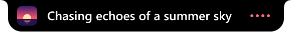
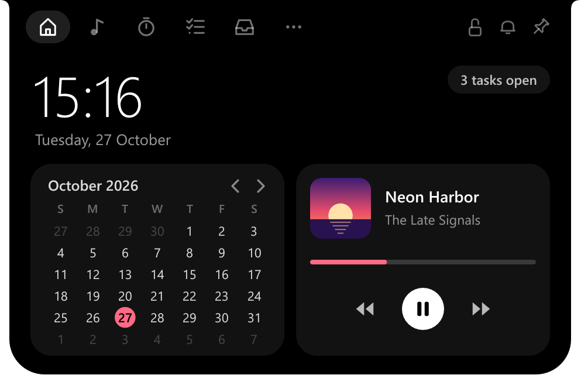
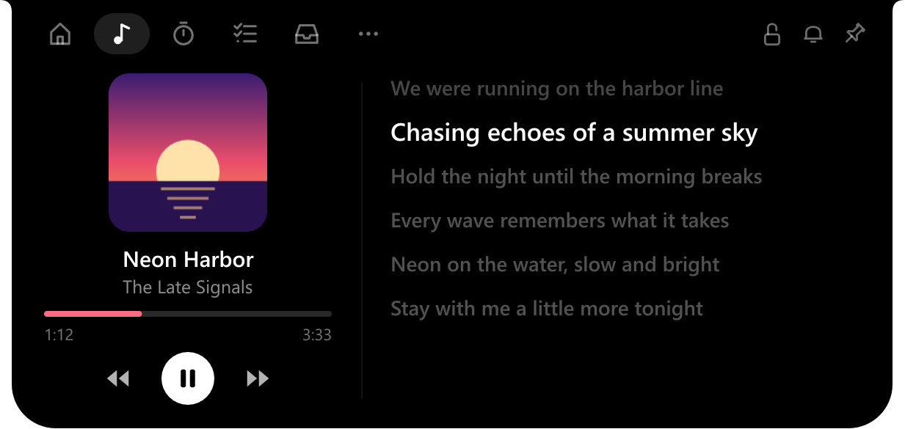
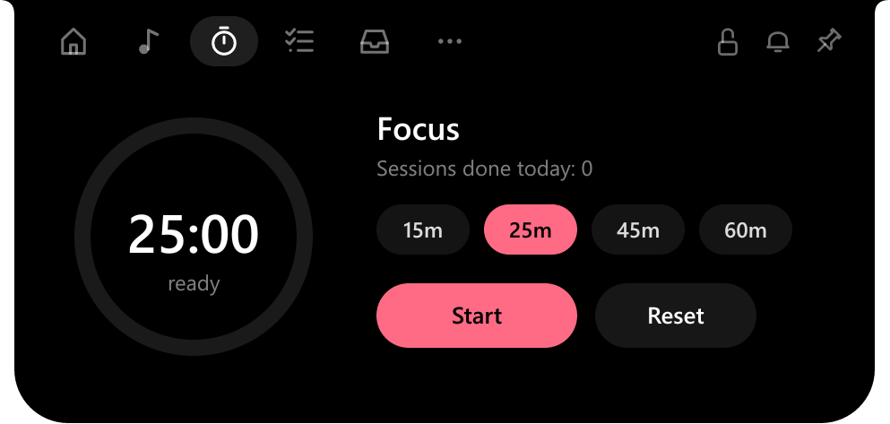
- Synced lyrics
- Romanized lyrics
- Lyric timing
- Media controls
- 10-second skips
- Focus timer
- Tasks
- Due dates
- Sticky notes
- Calendar
- CPU & GPU
- Power in watts
- FPS overlay
- File shelf
- Phone drop
- Clipboard history
- App launcher
- Notifications
- Click to open
- Three sizes
- Five themes
- Six fonts
Everything a glance away.
Hover to open, move away to close, or turn on Click to open if you'd rather it waited for a click. Nothing to launch, no window to find.
Your song, and every word of it.
Works with Spotify, YouTube in the browser, Apple Music, or any app in Windows' media controls. Synced lyrics scroll beside the cover, and the line being sung stays on the closed island.
- Play, pause, skip, and jump 10 seconds back or on, from the island
- Accent colour picked from the album cover
- Lyrics from LRCLIB, or NetEase when LRCLIB has none, saved so each song is looked up once
- Lyrics running early or late? Nudge them, and the fix is kept for that song
Sing along in any script.
Japanese and Korean lyrics are shown in Latin letters, with the original line right below, so you can follow the sound and still see the words as written.
- Hiragana, katakana and hangul read out of the box
- Turn on the Kanji readings add-on (9 MB) in Settings › Features to read kanji too
- The add-on downloads only when you switch it on, and is removed when you switch it off
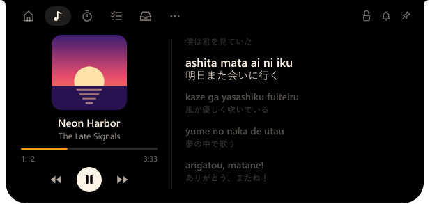
What your PC is doing, down to the watt.
CPU load per thread, GPU and VRAM, memory, network, every drive with its reads and writes, and the power the whole PC is drawing. Read from the same counters Task Manager uses.
- CPU power measured from the chip where it reports it
- Processes, clock speed and uptime at a glance
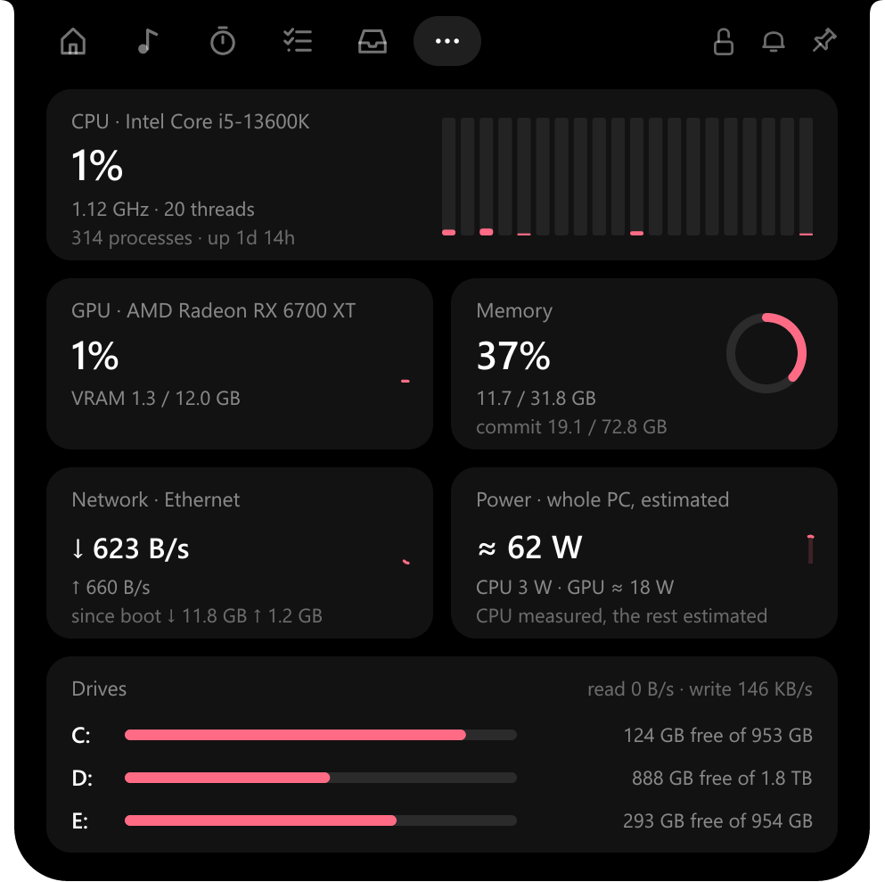
Frames per second, without touching the game.
FPS is counted from Windows' own frame log, so nothing is injected into the game and anti-cheat has nothing to see. Show it on the island, or in a small overlay in a corner of the game.
- FPS only, or FPS with CPU, GPU, RAM and power
- Alt + Shift + G switches modes, Alt + Shift + F hides the overlay
- DirectX 9 to 12 games
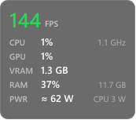
A shelf for files on the move.
Drop files on the island and drag them out later, into a chat, an email or another folder. Only their places are remembered; nothing is copied.
- Send photos from your phone by scanning a QR code: same Wi-Fi, nothing to install
- The phone link works only while its card is open
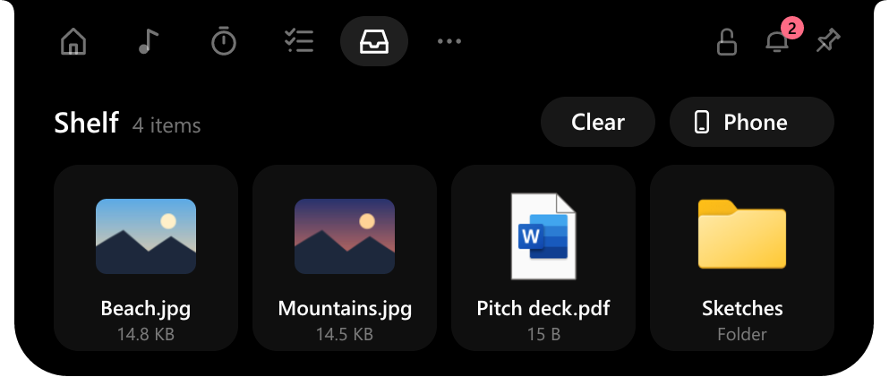
Messages, without the pile.
Discord, WhatsApp, mail and other apps peek on the closed island for a moment; the bell keeps count of what you haven't opened. Click one to open its app.
- Windows' own system notices are left out
- Read from Action Center, never saved
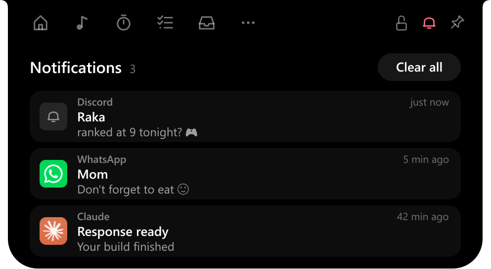
Put it where it suits you.
Drag the island to any edge. At the top it hangs as a notch; on the left or right it stands up, with pages laid out to match; at the bottom it opens upward; anywhere else it floats. It snaps to the middle of each edge, and a lock keeps it there.
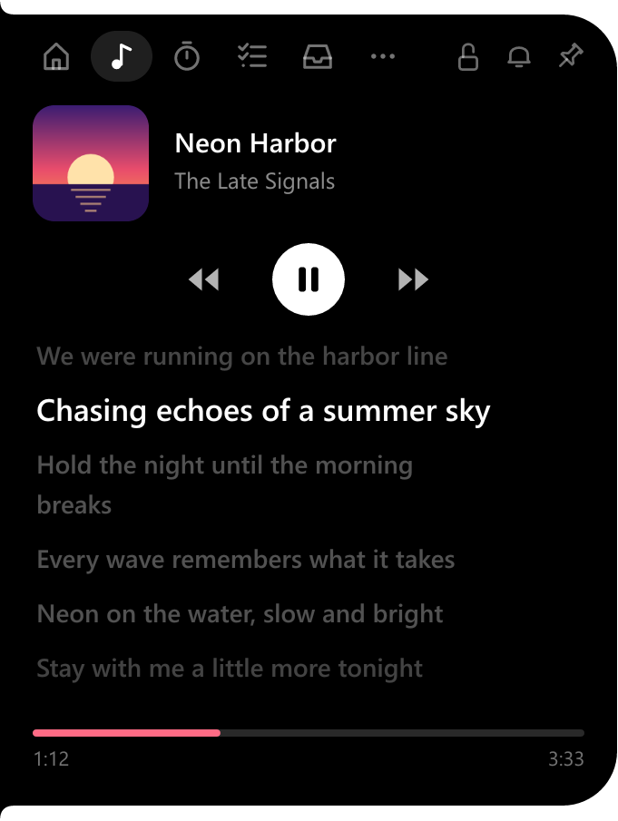
What's due, and when.
A short to-do list one hover away. Give a task a due date with a click: today, tomorrow, next week or any day on the calendar. Overdue ones turn red, and Home tells you what's due today.
- Sticky notes sit on the desktop with a title and their own due date, and are listed here too
- Click a note in the list to bring it to the front
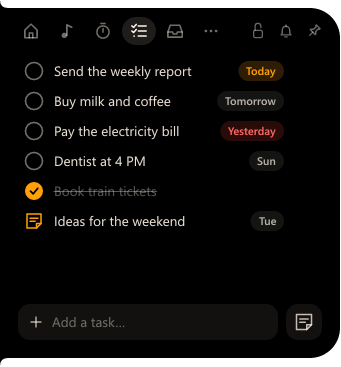
Five looks to start from.
Cosmo, Smoke, Midnight, Light and Retro are only starting points: change the background, text and accent with a colour picker, pick from six fonts, add scanlines, and make the island Small, Medium or Large.


Pick an accent to try it on the island and this page.
And the little things.
Focus timer
15, 25, 45 or 60 minutes, still counting on the closed island.
Due dates
For tasks and sticky notes alike: Today, Tomorrow or the day, and red once it's passed.
Calendar
The month on Home, starting on the day your region starts the week.
Clipboard history
Off until you turn it on. Kept encrypted on your PC across restarts; password manager copies are skipped.
Apps
Pin any installed app, Store app or Steam game, or browse to any file, and open it in one click.
Keeps itself up to date
Checks for a new version once a day; one click updates and restarts it.
Sticky notes
Notes on your desktop with a title, as long as you like, in the island's colours. Pin one on top; they come back after a restart.
Click to open
Rather it didn't open as the mouse passes? It can wait for a click, and close only when you click elsewhere.
Out of the way in fullscreen
Hides itself while a video or app fills the screen, and comes back when it's done.
Light enough to forget it's there.
Native Rust, drawn pixel by pixel. No browser engine inside.
Stays on your PC
No account, no tracking. Notifications are never saved, and clipboard history is stored encrypted so only your Windows account can read it.
A few small requests go out
To find lyrics, the song's title, artist and length are sent to LRCLIB, and to NetEase if LRCLIB has none. Once a day it asks GitHub for the newest version (you can turn that off), and the Kanji readings add-on comes from GitHub only if you switch it on. Nothing else.
Up and running in a minute.
Download
Get Cosmo-Setup.exe and run it. It installs for your account only, so no admin password is needed.
If SmartScreen asks
The installer isn't code-signed yet, so Windows may say it "protected your PC". Choose More info, then Run anyway.
Hover the island
It appears at the top of your screen. Right-click it for the menu; drag it to move it.
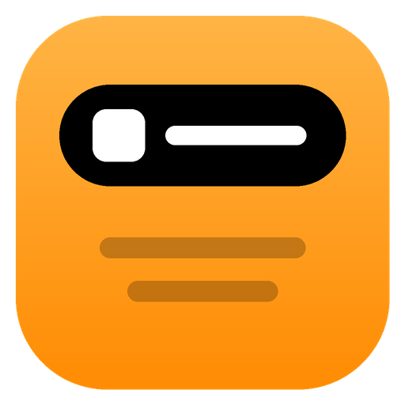
Get Cosmo
Free for Windows 10 and 11 (64-bit). Remove it any time from Settings › Apps.
Cosmo is free, and stays free.
If it makes your desk a little nicer, any support helps keep it growing.
Questions
Why doesn't the FPS show up?
Reading Windows' frame log needs your account to be in the "Performance Log Users" group. Right-click the island, open Gaming mode and choose the permission item: Windows asks once, then sign out and back in. Vulkan and OpenGL games aren't counted yet.
The overlay doesn't appear over my game.
Nothing can draw over a game in old-style exclusive fullscreen. Switch the game to borderless or windowed fullscreen. If Fullscreen Optimizations were turned off for that game, the Game page offers to turn them back on.
Notifications are empty.
Windows has to allow it: Settings › Privacy & security › Notifications › Let apps access your notifications.
Where are my settings kept?
In %APPDATA%\Cosmo: settings, tasks, sticky notes, the focus timer, pinned apps, the shelf, clipboard history (encrypted), saved lyrics and their timing fixes, and the Kanji readings add-on, so all of it is still there after a restart. Uninstalling asks whether to remove them too.
Japanese lyrics still show kanji.
Kana and hangul are turned into Latin letters on their own; kanji need the Kanji readings add-on in Settings › Features. A line with a word the add-on doesn't know is left as written rather than half converted.
How do I update?
Cosmo looks for a new version once a day. When there is one, the island says so and Settings › Features shows Update: one click downloads it, installs it and starts the new Cosmo, with your settings kept. You can also run a newer Cosmo-Setup.exe over the old one.